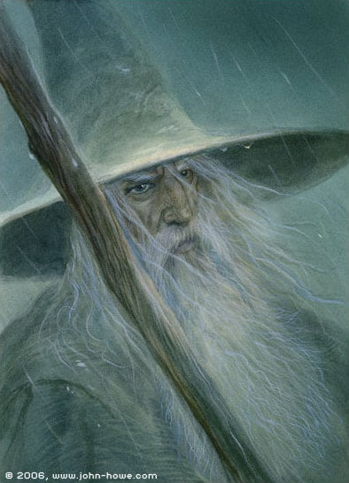
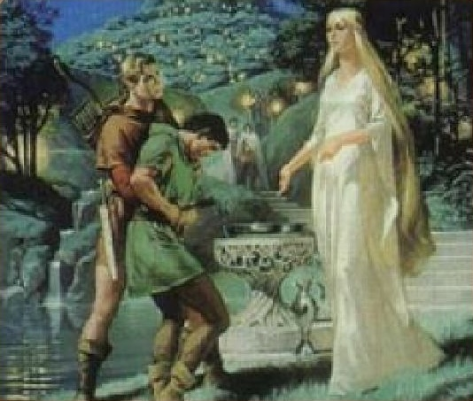
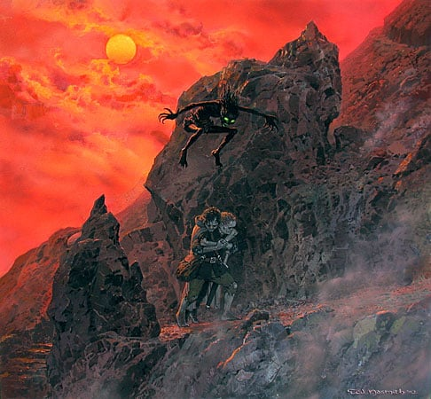
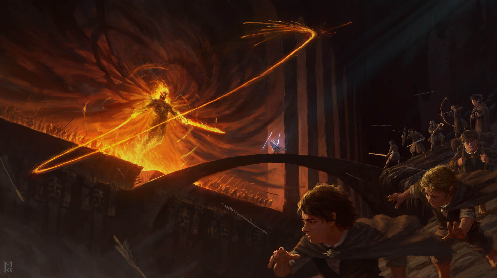
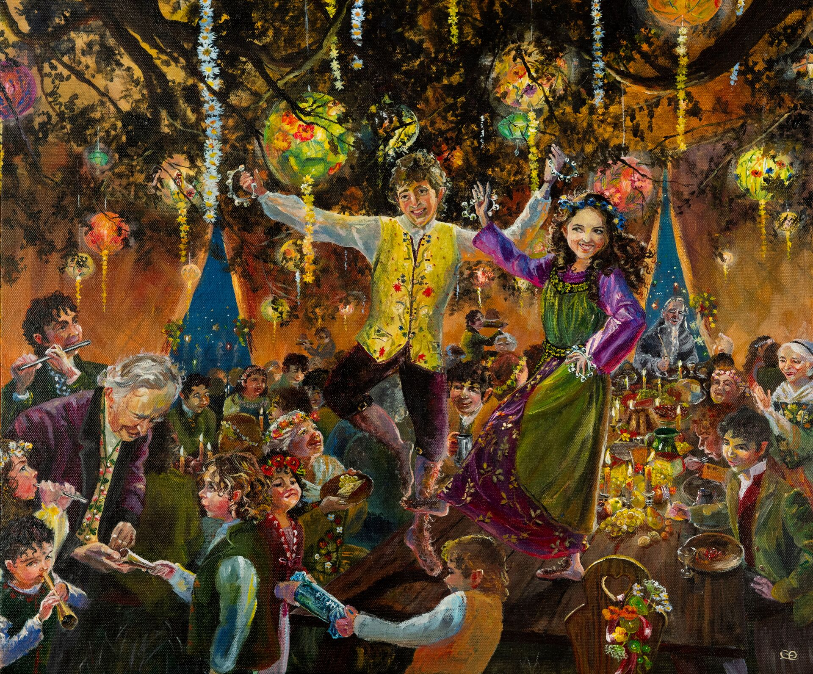

Eugene Ashley High School
Part I
Robert A. Parker, conductor
Part I
Ben Hylton
At Dawn We Rise opens with a quiet, expectant stillness — the hush of a world not yet awake. Composer Ben Hylton builds the work from a single melodic idea, layering voices until the full ensemble erupts in a declaration of momentum and light. The title captures the spirit of the piece exactly: effort, hope, and the decision to begin.
Pavel Tschesnokoff / arr. Bruce Houseknecht
Originally composed in 1912 as a choral anthem for the Russian Orthodox church, Salvation Is Created has become one of the most beloved transcriptions in the wind band repertoire. Tschesnokoff's harmonies move with the weight and warmth of a cathedral — slow, inevitable, and deeply felt. Bruce Houseknecht's arrangement preserves every ounce of the original's reverence.
David Holsinger
David Holsinger's Havendance is a rhythmic showcase from start to finish — unpredictable meter, driving percussion, and melodies that dart and pivot across the ensemble. Holsinger describes the piece as a dance of the haven, a place of refuge expressed through energy rather than calm. It demands precision, coordination, and a shared pulse that only comes from months of disciplined work together.
Part II
Part II
Balloonology — Chris Crockarell
Presented by the United States Marine Corps
Class of 2026
Tonight, we honor the graduating seniors of our band program. Their dedication, leadership, and love for music have shaped this ensemble in countless ways. As they move on to new adventures, we thank them for the memories and the music. Congratulations, seniors — your legacy plays on.
Part III
Robert A. Parker, conductor
Part III — Wind Ensemble
Premiered in 1988 and awarded the prestigious Sudler International Wind Band Composition Prize, Johan de Meij's Lord of the Rings stands as one of the most ambitious works ever written for concert band. Inspired by J.R.R. Tolkien's epic trilogy, the symphony traces the entire arc of Middle-earth across five movements — each a world unto itself.

The wizard: ancient, wise, and formidable. De Meij opens with a broad, noble theme that hints at immeasurable depth beneath a calm exterior. Power held in reserve — until it isn't.

The elven forest of Galadriel. Shimmering and ethereal, this movement stands entirely apart from the rest — hushed, timeless, otherworldly. De Meij suspends time itself here.

Perhaps the symphony's most inventive movement. A bassoon solo becomes Gollum himself: slippery, pitiable, and unsettling. The ensemble shifts around him like the shadows he haunts.

The Fellowship enters Moria. Darkness closes in and the walls press tighter with every measure. De Meij writes with full orchestral force here — the Balrog is unmistakable.

A return to the Shire and the simple joy of home. The finale resolves the entire symphony with warmth and hard-earned peace — the journey complete, the road behind them.
Robert Parker is now in his 20th year serving as the Director of Bands at Ashley High School. An Appalachian State University alumnus with a Bachelor of Music Education (2006), he has enriched his career with diverse roles across North Carolina and Virginia, including percussion instruction, conducting, and adjudication in various educational and musical settings.
Notably, Mr. Parker has guest conducted the NCBA Eastern All-District 9/10 Band and various All-County Bands. A highlight of his career was leading the Ashley High School Wind Ensemble at the 2016 NCMEA Professional Development Conference in Winston-Salem. He currently serves as the South MPA Chair for NCBAED.
An accomplished percussionist, Mr. Parker performs with several esteemed ensembles, including the Wilmington Symphony, Cape Fear Chorale, and the Tallis Chamber Orchestra. He plays a pivotal role in the Wilmington Symphonic Winds, both as board president and percussionist. Mr. Parker is affiliated with NAfME, NCMEA, NCBA, PAS, Phi Mu Alpha Sinfonia, and Tri-M Music Honors Society. He resides in Wilmington, North Carolina, with his wife Sarah, daughter Charlotte, and their dog Jethro.